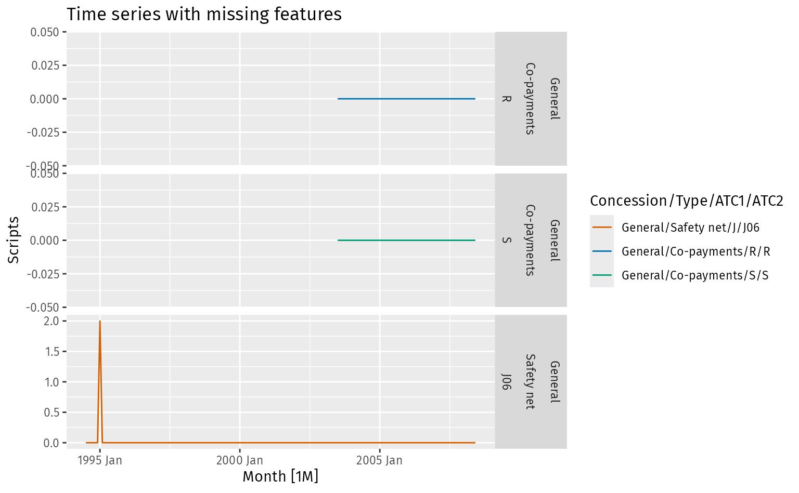
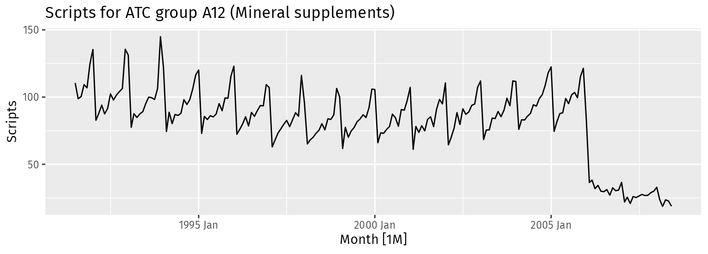

library(tsibble)
library(fable)
library(feasts)
library(broom)
library(tsibbledata)9 Time series data
For this chapter, we will load some additional packages designed to work with time series data. To learn more about these packages and their use in time series analysis, see Hyndman and Athanasopoulos (2021).
9.1 Time series anomaly detection paradigms
Time series data are observations that are collected over time. In this book, we will only consider time series that are observed at regular intervals, such as annually, monthly, or hourly.
When considering time series data, we can distinguish between three different anomaly detection paradigms:
- Weird times: Identifying anomalies within a time series in historical data.
- Weird series: Identifying an anomalous time series within a collection of time series.
- Surveillance: Identifying anomalies within a time series in real time
These can be illustrated using the following examples.
Weird times: In the top plot, we are looking for historical anomalies within time series data. This is common in quality control, or in data cleaning. The aim is to find time periods where the observations are different from the rest of the data. Again, it can easily be extended to multivariate time series, where we look for time periods when one or more of the series may display unusual observations.
Weird series: In the middle plot, we are looking for an anomalous time series within a collection of time series. The observations within each series may all be consistent, but the series as a whole may be unusual. This is, by its nature, a multivariate problem. It is common in finance, where we look for unusual behaviour of a stock within a collection of stocks, or in health, where we look for unusual behaviour of a patient within a collection of patients.
Surveillance: In the bottom plot, we are looking for an anomaly in the next observation in the time series. This is commonly done in surveillance, when a time series is monitored in real time to identify an unusual observation, and appropriate action taken. An anomaly in this context, is an observation that is very different from what was forecast. Although only a single time series is shown in this plot, the idea easily extends to multivariate time series, where we look for something unusual occurring in the next time period across a set of time series.
We will discuss each of these paradigms in turn.
9.2 Weird times
As a vehicle of illustration, we will consider French mortality rates, disaggregated by age and sex. These are obtained from the Human Mortality Database (2024). We will consider male and female data from 1816 to 1999 over ages 0 to 85, giving 172 separate time series, each of length 184. In fact, the top plot in Figure 9.1 shows the male mortality rates for 25 year olds over this time period.
fr_mortality#> # A tibble: 31,648 × 4
#> Year Age Sex Mortality
#> <int> <int> <chr> <dbl>
#> 1 1816 0 Female 0.187
#> 2 1816 1 Female 0.0467
#> 3 1816 2 Female 0.0339
#> 4 1816 3 Female 0.0229
#> 5 1816 4 Female 0.0160
#> 6 1816 5 Female 0.0138
#> 7 1816 6 Female 0.0121
#> 8 1816 7 Female 0.0104
#> 9 1816 8 Female 0.00891
#> 10 1816 9 Female 0.00760
#> # ℹ 31,638 more rowsFigure 9.2 shows the data for both sexes and all ages. The mortality rates have improved over time for all ages, especially since 1950. Infant mortality (age 0) is much higher than the rest of childhood, with mortality rates at a minimum at about age 10 in all years. The highest mortality rates are for the oldest age groups. The effect of the two wars are particularly evident in the male mortality rates.
fr_mortality |>
ggplot(aes(x = Year, y = Mortality, color = Age, group = Age)) +
geom_line() +
facet_grid(. ~ Sex) +
scale_y_log10(labels = scales::comma)
Anomaly detection methods for identifying weird time anomalies are usually based on fitting a smooth function m_t through the observations, estimating the spread in the series a_t, and computing the standardized residuals e_t = (y_t - m_t)/a_t. We then identify anomalies in the e_t series using one of the methods discussed in Chapter 6 or Chapter 7. To illustrate, we will consider two such approaches, but many more are possible depending on how m_t and a_t are estimated, and how anomalies are identified in e_t.
Hampel identifier
The Hampel identifier is due to a proposal of Frank Hampel (Davies and Gather 1993), and is designed to identify anomalies in a time series based on whether an observation is very different from the neighbouring observations. Suppose we define neighbourhoods comprising observations within h time periods. Then the local median is given by m_t = \text{median}(y_{t-h}, \dots, y_{t+h}). This is also called a “moving median”, a “running median” or a “rolling median”. Similarly, the local median absolute deviation (MAD) is given by a_t = \text{median}(|y_{t-h}-m_t|, \dots, |y_{t+h}- m_t|). This measures the variation of the series in the neighbourhood of time t. The residuals e_t = (y_t-m_t)/a_t provide a measure for how different an observation y_t is from its neighbours. The Hampel identifier denotes an observation as an anomaly if |e_t| > \tau for some threshold \tau. A related idea is the Hampel filter, where each anomaly is replaced by the local median m_t.
The threshold is often set under the assumption of a Normal distribution, for which the MAD is equal to 0.67445 times the standard deviation. So it is common to set \tau = k/0.67445 where k is the number of standard deviations permitted before an observation is considered an outlier. Because we apply the rule repeatedly over the length of a time series, we need to be careful of the problem of multiple comparisons, where the probability of a false positive overall is much larger than the probability of a false positive for each individual test. However, it is not straightforward to adjust the probabilities because the tests are not independent, and the dependency between them depends on the window size h, and the characteristics of the time series. Setting k=5 or 6 seems to work quite well for many problems.
The hampel_anomalies() function implements this algorithm. The code below applies the algorithm to all 172 time series in fr_mortality. The bandwidth argument corresponds to h, and the k argument corresponds to k above.
fr_anomalies <- fr_mortality |>
group_by(Age, Sex) |>
mutate(hampel = hampel_anomalies(Mortality, bandwidth = 7, k = 6)) |>
ungroup() |>
filter(hampel) |>
arrange(Year, Age)
fr_anomalies#> # A tibble: 403 × 5
#> Year Age Sex Mortality hampel
#> <int> <int> <chr> <dbl> <lgl>
#> 1 1832 18 Male 0.00868 TRUE
#> 2 1832 30 Female 0.0127 TRUE
#> 3 1832 30 Male 0.0123 TRUE
#> 4 1832 31 Female 0.0130 TRUE
#> 5 1832 31 Male 0.0126 TRUE
#> 6 1832 33 Female 0.0135 TRUE
#> 7 1832 39 Female 0.0159 TRUE
#> 8 1832 40 Female 0.0167 TRUE
#> 9 1832 41 Female 0.0171 TRUE
#> 10 1832 41 Male 0.0151 TRUE
#> # ℹ 393 more rowsCode
# Find years containing anomalies
yrs <- fr_anomalies |>
select(Year, Sex) |>
distinct()
fr_anomalies_plot_male2 <- fr_anomalies |>
filter(Sex == "Male") |>
ggplot(aes(x = Year, y = Age)) +
facet_grid(. ~ Sex) +
scale_x_continuous(
breaks = seq(1820, 2000, by = 20),
limits = range(yrs$Year)
) +
geom_vline(
xintercept = unique(yrs$Year[yrs$Sex == "Male"]),
alpha = 0.5, color = "grey"
) +
geom_point(col = "#478cb2") +
ggrepel::geom_text_repel(
data = yrs |>
filter(Sex == "Male", !Year %in% 1915:1918),
aes(y = 75, label = Year), col = "#478cb2", size = 3, seed = 1967
) +
ylim(4, 85)
fr_anomalies_plot_female2 <- fr_anomalies |>
filter(Sex == "Female") |>
ggplot(aes(x = Year, y = Age)) +
facet_grid(. ~ Sex) +
scale_x_continuous(
breaks = seq(1820, 2000, by = 20),
limits = range(yrs$Year)
) +
geom_vline(
xintercept = unique(yrs$Year[yrs$Sex == "Female"]),
alpha = 0.5, color = "grey"
) +
labs(title = "French mortality anomalies") +
geom_point(col = "#c1653a") +
ggrepel::geom_text_repel(
data = yrs[yrs$Sex == "Female", ],
aes(y = 75, label = Year), col = "#c1653a", size = 3, seed = 1967
) +
ylim(4, 85)
patchwork::wrap_plots(
fr_anomalies_plot_female2,
fr_anomalies_plot_male2,
nrow = 1
)Figure 9.3 shows the 403 observations (out of 31648) that have been identified as anomalies, showing the wars and epidemics that have occurred over time. The following events in French history are evident in the data:
- 1832, 1849, 1854: Cholera outbreaks
- 1853-1856: Crimean war
- 1870: Franco-Prussian war
- 1871: Repression of the ‘Commune de Paris’
- 1914-1918: World War I
- 1918: Spanish flu outbreak
- 1940-1944: World War II
Surprisal anomalies
The Hampel identifier worked well for the annual mortality series, but the local median approach will break down when there is seasonality or other systematic patterns in the data. However, the same idea can be adapted by replacing the local median with a more sophisticated way of modelling the signal in the data. One such method is STL (Seasonal Trend decomposition using Loess) due to Cleveland et al. (1990), and extended by Bandara, Hyndman, and Bergmeir (2022) to handle multiple seasonal periods or series with no seasonality.
We will apply this idea to find unusual observations in US weekly mortality data between 2015 and 2024, obtained from the Human Mortality Database (2024). The following code downloads the data from the website, and wrangles it into a tsibble object (a special type of tibble designed for time series data).
Code
us_stmf <- "https://www.mortality.org/File/GetDocument/Public/STMF/Outputs/USAstmfout.csv" |>
read.csv(header = TRUE) |>
# Create time index varaible
mutate(Week = yearweek(paste0(Year,"-W",Week))) |>
# Consider only sexes combined, and omit last week due to reporting delays
filter(Sex == "b", Week < max(Week) - 1) |>
# Fix column names
select(Week, `X0.14.1`:`X85..1`) |>
rename(
"0-14" = `X0.14.1`,
"15-64" = `X15.64.1`,
"65-74" = `X65.74.1`,
"75-84" = `X75.84.1`,
"85+" = `X85..1`,
) |>
# Create a tsibble object
tidyr::pivot_longer(-Week, names_to = "Age group", values_to = "Mortality") |>
as_tsibble(index = Week, key = `Age group`)Figure 9.4 shows the data on five age groups. There appears to be no seasonality in the 0–14 age group, but all other age groups have seasonal peaks around the start of January each year due to winter illnesses, with the seasonal strength increasing with age. There is a noticeable change in mortality rates during 2020, 2021 and the start of 2022. This is due to COVID-19.
us_stmf |>
autoplot(Mortality) +
facet_grid(`Age group` ~ ., scales = "free_y")Next, we apply an STL model to the mortality rates in each age group. This helps separate out the regular seasonality, from any unusual fluctuations.
stmf_fit <- us_stmf |>
model(stl = STL(Mortality)) |>
augment() |>
as_tibble() |>
select(-.model, -.innov)
stmf_fit#> # A tibble: 2,530 × 5
#> `Age group` Week Mortality .fitted .resid
#> <chr> <week> <dbl> <dbl> <dbl>
#> 1 0-14 2015 W02 0.000521 0.000534 -0.0000130
#> 2 0-14 2015 W03 0.000536 0.000526 0.0000100
#> 3 0-14 2015 W04 0.000530 0.000526 0.00000406
#> 4 0-14 2015 W05 0.000525 0.000530 -0.00000532
#> 5 0-14 2015 W06 0.000493 0.000526 -0.0000327
#> 6 0-14 2015 W07 0.000527 0.000537 -0.0000100
#> 7 0-14 2015 W08 0.000529 0.000539 -0.00000961
#> 8 0-14 2015 W09 0.000521 0.000525 -0.00000366
#> 9 0-14 2015 W10 0.000502 0.000538 -0.0000357
#> 10 0-14 2015 W11 0.000505 0.000533 -0.0000279
#> # ℹ 2,520 more rowsThe .fitted column contains m_t, and the .resid column contains estimates of y_t - m_t, where m_t takes account of any seasonality in the data. We will estimate the spread a_t using a multiple of the IQR, where the multiple is chosen so that a_t is equivalent to a standard deviation if the data were normally distributed. A separate estimate of spread is needed for each age group because the mortality rates are so different.
stmf_scores <- stmf_fit |>
group_by(`Age group`) |>
mutate(
s = IQR(.resid),
e = .resid / IQR(.resid) / 1.349
) |>
ungroup()
stmf_scores#> # A tibble: 2,530 × 7
#> `Age group` Week Mortality .fitted .resid s e
#> <chr> <week> <dbl> <dbl> <dbl> <dbl> <dbl>
#> 1 0-14 2015 W02 0.000521 0.000534 -0.0000130 0.0000273 -0.354
#> 2 0-14 2015 W03 0.000536 0.000526 0.0000100 0.0000273 0.272
#> 3 0-14 2015 W04 0.000530 0.000526 0.00000406 0.0000273 0.110
#> 4 0-14 2015 W05 0.000525 0.000530 -0.00000532 0.0000273 -0.145
#> 5 0-14 2015 W06 0.000493 0.000526 -0.0000327 0.0000273 -0.887
#> 6 0-14 2015 W07 0.000527 0.000537 -0.0000100 0.0000273 -0.273
#> 7 0-14 2015 W08 0.000529 0.000539 -0.00000961 0.0000273 -0.261
#> 8 0-14 2015 W09 0.000521 0.000525 -0.00000366 0.0000273 -0.0994
#> 9 0-14 2015 W10 0.000502 0.000538 -0.0000357 0.0000273 -0.969
#> 10 0-14 2015 W11 0.000505 0.000533 -0.0000279 0.0000273 -0.758
#> # ℹ 2,520 more rowsAt this point, we could identify a point as an anomaly if |e_t| is greater than some threshold, as was done with the Hampel identifier. But we will use surprisals with probabilities calculated using a GPD, as it is a safer calculation making fewer assumptions about the distribution of the residuals.
stmf_scores <- stmf_scores |>
mutate(prob = surprisals(e, distribution = dist_normal(), approximation = "gpd")) |>
filter(prob < 0.02)
stmf_scores |> arrange(prob)#> # A tibble: 56 × 8
#> `Age group` Week Mortality .fitted .resid s e prob
#> <chr> <week> <dbl> <dbl> <dbl> <dbl> <dbl> <dbl>
#> 1 85+ 2020 W16 0.210 0.161 0.0492 0.00614 5.94 0.00167
#> 2 75-84 2020 W15 0.0633 0.0494 0.0139 0.00181 5.70 0.00196
#> 3 85+ 2020 W15 0.208 0.162 0.0464 0.00614 5.60 0.00211
#> 4 75-84 2020 W16 0.0616 0.0485 0.0131 0.00181 5.37 0.00249
#> 5 65-74 2020 W15 0.0253 0.0199 0.00537 0.000755 5.27 0.00265
#> 6 15-64 2021 W36 0.00541 0.00440 0.00101 0.000143 5.23 0.00273
#> 7 85+ 2020 W17 0.201 0.158 0.0427 0.00614 5.15 0.00290
#> 8 15-64 2021 W35 0.00536 0.00440 0.000958 0.000143 4.95 0.00338
#> 9 15-64 2021 W37 0.00526 0.00433 0.000930 0.000143 4.81 0.00378
#> 10 75-84 2020 W53 0.0714 0.0597 0.0117 0.00181 4.79 0.00383
#> # ℹ 46 more rowsus_stmf |>
autoplot(Mortality) +
facet_grid(`Age group` ~ ., scales = "free_y") +
geom_point(data = stmf_scores)
A total of 56 observations have surprisal probabilities less than 0.02, with the most extreme being in weeks 15–16 of 2020, in the elderly age groups. Although the test can pick up unusually low or unusually high mortality rates, only 2 of the 56 identified anomalies is for low mortality, and that is for 85+ year olds in Week 3 of 2020 and in Week 15 of 2021. In both weeks, it is possible that the elderly were taking precautions against COVID-19, resulting in restricted movements, and therefore lower mortality rates.
There are four anomalous peaks in the plot, centred on the following dates:
- 2020 W14 – W18
- 2020 W49 – 2021 W03
- 2021 W33 – W39
- 2022 W02 – W05
Some of these periods affected some age groups more than others.
Multivariate time series
The above analysis treats each series separately, and seeks to find anomalies within each series, regardless of the behaviour of related series. To take account of all series simultaneously, we need to take a multivariate approach, where we are looking for time periods that are anomalous across multiple series. One way to do this is to first take principal components of the series, and then apply the preceding procedure to the series of first principal component scores.
First we convert the series to logs as they are on vastly different scales, then we transform the data to wide form. Finally, we compute the first principal component of the resulting matrix.
# Convert to wide form
us_wide <- us_stmf |>
as_tibble() |>
mutate(logm = log(Mortality)) |>
tidyr::pivot_wider(id_cols = Week, names_from = `Age group`, values_from = logm)
# Compute 1 principal component from mortality rates
pcs <- us_wide |>
select(-Week) |>
prcomp(rank = 1) |>
broom::augment(us_wide |> select(Week))The resulting series is plotted in Figure 9.6, and shows strong seasonality, along with large peaks during the periods of COVID outbreaks. Now we can apply an STL model to find anomalies in this series. There is no need to scale the residuals because there is only one series.
pc_anomalies <- pcs |>
as_tsibble(index = Week) |>
model(stl = STL(.fittedPC1)) |>
augment() |>
select(-.model, -.innov) |>
mutate(prob = surprisals(.resid, distribution = dist_normal(), approximation = "gpd")) |>
filter(prob < 0.05)
pc_anomalies#> # A tsibble: 25 x 5 [1W]
#> Week .fittedPC1 .fitted .resid prob
#> <week> <dbl> <dbl> <dbl> <dbl>
#> 1 2020 W03 0.0346 0.284 -0.250 0.0355
#> 2 2020 W04 0.0314 0.258 -0.227 0.0477
#> 3 2020 W14 0.458 0.119 0.338 0.00861
#> 4 2020 W15 0.623 0.152 0.471 0.000468
#> 5 2020 W16 0.570 0.122 0.448 0.000829
#> 6 2020 W17 0.479 0.101 0.377 0.00402
#> 7 2020 W18 0.367 0.0894 0.277 0.0239
#> 8 2020 W50 0.696 0.432 0.264 0.0290
#> 9 2020 W51 0.732 0.438 0.294 0.0184
#> 10 2020 W52 0.768 0.469 0.299 0.0170
#> # ℹ 15 more rows# Plot principal component scores
pcs |>
ggplot(aes(x = Week, y = .fittedPC1)) +
geom_line() +
labs(y = "First principal component scores") +
geom_point(data = pc_anomalies, color = "red")As expected, many of the same weeks identified earlier in an analysis of individual series have been returned. The probability of false positives increases with both the length of each series, and the number of each series. So we have used a larger probability threshold here than in the analysis of individual series. Conversely, some anomalies might appear to be marginal in the individual series, but when the series are combined like this, the anomalous periods may be clearer. This appears to be the case in weeks 3 and 4 of 2020, where unusually low mortality rates are seen, probably because of restricted movements due to growing uncertainty associated with the spread of COVID-19. (The earlier analysis only showed an anomaly in this period for 85+ year olds in 2020 W3.) Unusually low mortality rates have also been identified in Weeks 13 and 15 of 2021, probably also due to restricted movements, especially of older people.
9.3 Weird series
Next we consider unusual series within a large collection of time series.
To illustrate the ideas we will use a data set of monthly observations on the Australian Pharmaceutical Benefits Scheme (PBS), from July 1991 to June 2008. The PBS involves the Australian government subsidising certain pharmaceutical products, to allow more equitable access to essential medicines. The data set contains monthly sales volumes of those products being subsidised, classified according to the Anatomical Therapeutic Chemical (ATC) classification system, by the type of government subsidy, and by whether the purchaser was in a concession group (such as pensioner, unemployed, etc.). There are 336 separate time series contained in the PBS data set.
# Compute features
PBS_feat <- PBS |>
features(Scripts, feature_set(pkgs = "feasts"))
# Keep series with no missing features
PBS_feat_nomissing <- PBS_feat |> na.omit()
# Compute principal components
PBS_prcomp <- PBS_feat_nomissing |>
select(-Concession, -Type, -ATC1, -ATC2) |>
prcomp(scale = TRUE, rank = 2) |>
augment(PBS_feat_nomissing)# Plot the first two components
PBS_prcomp |>
ggplot(aes(x = .fittedPC1, y = .fittedPC2)) +
geom_point() +
labs(x = "Principal component 1", y = "Principal component 2")There are two series which are clearly separated from the rest, with principal component 2 less than -15. Although it is not necessary here, because these two anomalies are so obvious, we can confirm them using KDE surprisal probabilities.
PBS_prcomp <- PBS_prcomp |>
mutate(prob = surprisals(PBS_prcomp |> select(.fittedPC1,.fittedPC2), loo = TRUE)) |>
select(Concession, Type, ATC2, .fittedPC1, .fittedPC2, prob) |>
arrange(prob)
PBS_prcomp#> # A tibble: 333 × 6
#> Concession Type ATC2 .fittedPC1 .fittedPC2 prob
#> <chr> <chr> <chr> <dbl> <dbl> <dbl>
#> 1 Concessional Safety net J06 7.09 -17.9 0
#> 2 General Co-payments C05 8.56 -23.1 0
#> 3 General Co-payments S02 5.58 -11.6 0.00901
#> 4 General Co-payments A15 -1.13 -8.90 0.0120
#> 5 General Co-payments R06 3.51 -6.25 0.0150
#> 6 General Co-payments P03 5.14 -9.73 0.0180
#> 7 Concessional Co-payments J06 4.46 -9.67 0.0210
#> 8 General Safety net D11 2.60 -3.67 0.0240
#> 9 General Co-payments S03 -0.788 -6.33 0.0270
#> 10 General Co-payments J06 1.86 -7.44 0.0300
#> # ℹ 323 more rowsNow, let’s plot the two most anomalous series, to see if we can spot what is so unusual about them.
# Pull out most unusual series using the first principal component
outliers <- PBS_prcomp |> filter(prob < 0.001)
# Visualise the unusual series
PBS |>
semi_join(outliers, by = c("Concession", "Type", "ATC2")) |>
autoplot(Scripts) +
facet_grid(vars(Concession, Type, ATC2), scales = "free_y") +
labs(title = "Outlying time series in PC space")These series both contain almost all zeros, with just a few non-zero values. The three series we omitted may also be unusual, so let’s plot them as well.
missing <- PBS_feat |>
anti_join(PBS_feat_nomissing) |>
select(ATC2, Type, Concession)
# Visualise the series with missing features
PBS |>
semi_join(missing, by = c("Concession", "Type", "ATC2")) |>
autoplot(Scripts) +
facet_grid(vars(Concession, Type, ATC2), scales = "free_y") +
labs(title = "Time series with missing features")

Similarly, one of these series contains only zeros apart from in one month. The other two contain only zeros for the period when observations were recorded.
9.4 Surveillance
In surveillance, we are interested in identifying anomalies in real time, either within one series or across several time series. This is common in monitoring systems, where we want to identify unusual behaviour as soon as it occurs. For example, in a manufacturing plant, we may want to identify when a machine is not operating as expected, and take action to prevent further problems. In retail, we may want to identify when sales are unusually high or low, and adjust stock levels if necessary.
Again, we will use the PBS data. For this example, we will combine the data into the ATC level 2 groups, and look at total sales volumes (measured in thousands of scripts). The resulting data set contains 84 separate time series, one for each ATC2 value.
pbs <- PBS |>
arrange(ATC2, Month) |>
group_by(ATC2) |>
summarise(Scripts = sum(Scripts) / 1e3, .groups = "drop") |>
mutate(t = as.numeric(Month - min(Month) + 1))
pbs#> # A tsibble: 17,016 x 4 [1M]
#> # Key: ATC2 [84]
#> ATC2 Month Scripts t
#> <chr> <mth> <dbl> <dbl>
#> 1 A01 1991 Jul 22.6 1
#> 2 A01 1991 Aug 20.4 2
#> 3 A01 1991 Sep 21.4 3
#> 4 A01 1991 Oct 23.7 4
#> 5 A01 1991 Nov 23.5 5
#> 6 A01 1991 Dec 26.3 6
#> 7 A01 1992 Jan 22.0 7
#> 8 A01 1992 Feb 16.4 8
#> 9 A01 1992 Mar 17.2 9
#> 10 A01 1992 Apr 18.8 10
#> # ℹ 17,006 more rowsLet’s first look at the time series for just one ATC group: A12 (Mineral supplements). In fact, this is the same series as was shown in the top panel of Figure 9.1.
pbs |>
filter(ATC2 == "A12") |>
autoplot(Scripts) +
labs(title = "Scripts for ATC group A12 (Mineral supplements)")

Here there has been a sudden drop in sales at the end of 2005, most likely because of some products no longer being eligible for subsidy. There can also be sudden jumps in sales when a new product becomes available, or a new class of drugs is added to the scheme.
The goal of surveillance is to identify these anomalies as soon as they occur. We can do this by fitting a model to the data, and then comparing the observed values to the model’s forecasts. If the observed values are very different from the forecast, then we have an anomaly.
Statistical forecasting models provide forecasts in the form of probability distributions. Let y_t denote the observation of a time series at time t. Then a forecast can be expressed as a conditional distribution f(y_{t+h} | y_1, \dots, y_{t}, \bm{x}_t), where y_1,\dots,y_t denotes the observed history of the series, and \bm{x}_t contains any other information available at time t that is used in the model. The forecast “horizon” is given by h, denoting the number of time periods into the future that we wish to forecast. Different forecasting methods use different conditioning information, and result in a different form of the forecast distribution. See Hyndman and Athanasopoulos (2021) for a detailed discussion of forecasting methods.
Once we observe the value of y_{t+h}, we can calculate the corresponding surprisal probability in the same way as we discussed in Section 6.2. Because we are interested in real-time surveillance, we need only consider the one-step-ahead forecast density, f(y_{t+1} | y_1, \dots, y_{t}). We can then calculate the surprisal as s_{t+1} = -\log f(y_{t+1} | y_1, \dots, y_{t}, \bm{x}_t). This needs to be done iteratively for each time period, updating the model as new data becomes available. Since we need some observations with which to fit a model, we can’t begin the process at time t=1. Instead, we’ll begin at time t=I, where I is the smallest number of observations with which we can reasonably estimate the time series model. The value of I will depend on the complexity of the model being used. For simple models with few parameters, we may be able to set I to around 20, but for complex models with many parameters, I may need to be much larger.
We can summarise the anomaly detection algorithm for surveillance as follows. First, we’ll change the notation slightly to allow for more than one series. Let y_{i,t} denote the observation of the ith series at time t.
For each t = I,I+1,\dots, and for all series i=1,\dots,m:
- Fit a time series model to the series y_{i,1},\dots,y_{i,t}, and estimate the one-step forecast density, f_{i,t+1}(y \mid y_{i,1},\dots,y_{i,t}, \bm{x}_t).
- Compute the surprisal: s_{i,t+1} = -\log f_{i,t+1}(y_{i,t+1}\mid y_{i,1},\dots,y_{i,t}, \bm{x}_t), and the the surprisal probabilities: P(S > s_{i,t+1}).
To illustrate, let’s apply this to the pbs data. Starting with I=36 (3 years of data), we will fit ETS models to all available series (Ch 8, Hyndman and Athanasopoulos 2021), and forecast one step ahead in each case. Then we repeat the exercise using 37 observations, then 38 observations, and so on. This is known as a “rolling origin forecast” because the forecast rolls forward by one period each iteration. The process can be illustrated as in Figure 9.11.
Let’s step through the process for the first iteration, with t=36. We fit ETS models to each of the time series, with the specific ETS model selected according to the characteristics of the series. See (Ch8, Hyndman and Athanasopoulos 2021) for details of how this is done.
pbs_fit <- pbs |>
filter(t <= 36) |>
model(ets = ETS(Scripts))
pbs_fit#> # A mable: 83 x 2
#> # Key: ATC2 [83]
#> ATC2 ets
#> <chr> <model>
#> 1 A01 <ETS(M,N,A)>
#> 2 A02 <ETS(M,A,M)>
#> 3 A03 <ETS(M,A,M)>
#> 4 A04 <ETS(M,N,A)>
#> 5 A06 <ETS(M,A,M)>
#> 6 A07 <ETS(M,N,M)>
#> 7 A09 <ETS(M,A,M)>
#> 8 A10 <ETS(M,A,M)>
#> 9 A11 <ETS(M,A,M)>
#> 10 A12 <ETS(M,N,A)>
#> # ℹ 73 more rowsForecasts are produced from all fitted models by applying the forecast() function to the model table.
pbs_fc <- forecast(pbs_fit, h = 1)
pbs_fc#> # A fable: 83 x 5 [1M]
#> # Key: ATC2, .model [83]
#> ATC2 .model Month Scripts .mean
#> <chr> <chr> <mth> <dist> <dbl>
#> 1 A01 ets 1994 Jul N(23, 2.1) 23.1
#> 2 A02 ets 1994 Jul N(590, 1054) 590.
#> 3 A03 ets 1994 Jul N(84, 19) 84.2
#> 4 A04 ets 1994 Jul N(69, 15) 69.4
#> 5 A06 ets 1994 Jul N(33, 4.2) 33.1
#> 6 A07 ets 1994 Jul N(74, 17) 73.6
#> 7 A09 ets 1994 Jul N(3.7, 0.029) 3.68
#> 8 A10 ets 1994 Jul N(166, 54) 166.
#> 9 A11 ets 1994 Jul N(30, 3) 30.2
#> 10 A12 ets 1994 Jul N(100, 23) 100.
#> # ℹ 73 more rowsThe forecasts are in the Scripts column. Note that each of them is a Normal distribution where the mean and variance has been estimated using the ETS model. The mean of the forecast distribution is given as .mean.
We can combine these forecasts with the observed values from time t=37.
pbs_compare <- pbs_fc |>
rename(fcast = Scripts) |>
left_join(pbs |> filter(t == 37), by = c("Month", "ATC2")) |>
select(Month, ATC2, Scripts, fcast)
pbs_compare#> # A tsibble: 83 x 4 [?]
#> # Key: ATC2 [83]
#> Month ATC2 Scripts fcast
#> <mth> <chr> <dbl> <dist>
#> 1 1994 Jul A01 20.9 N(23, 2.1)
#> 2 1994 Jul A02 516. N(590, 1054)
#> 3 1994 Jul A03 80.5 N(84, 19)
#> 4 1994 Jul A04 66.1 N(69, 15)
#> 5 1994 Jul A06 29.2 N(33, 4.2)
#> 6 1994 Jul A07 68.5 N(74, 17)
#> 7 1994 Jul A09 3.32 N(3.7, 0.029)
#> 8 1994 Jul A10 150. N(166, 54)
#> 9 1994 Jul A11 27.8 N(30, 3)
#> 10 1994 Jul A12 87.9 N(100, 23)
#> # ℹ 73 more rowsNow we can compute the surprisal probabilities from the observed values (column Scripts) and the forecast distributions (column fcast):
pbs_compare <- pbs_compare |>
mutate(prob = surprisals(Scripts, distribution = fcast)) |>
arrange(prob)
pbs_compare#> # A tsibble: 83 x 5 [?]
#> # Key: ATC2 [83]
#> Month ATC2 Scripts fcast prob
#> <mth> <chr> <dbl> <dist> <dbl>
#> 1 1994 Jul S01 347. N(403, 356) 0.00290
#> 2 1994 Jul H02 94.3 N(109, 26) 0.00358
#> 3 1994 Jul S02 63.0 N(74, 16) 0.00465
#> 4 1994 Jul D07 194. N(222, 101) 0.00580
#> 5 1994 Jul M02 21.6 N(25, 1.9) 0.00686
#> 6 1994 Jul C04 0.248 N(1.2, 0.14) 0.00796
#> 7 1994 Jul V06 6.77 N(7.8, 0.17) 0.00911
#> 8 1994 Jul G01 53.7 N(62, 11) 0.0108
#> 9 1994 Jul N04 45.3 N(51, 4.4) 0.0117
#> 10 1994 Jul A12 87.9 N(100, 23) 0.0121
#> # ℹ 73 more rowsThe lowest probabilities indicate possible anomalies. Let’s look at the most likely anomaly (or least likely observation), from series S01.
Code
s01 <- pbs |> filter(ATC2 == "S01", t <= 37)
pbs_fc |>
filter(ATC2 == "S01") |>
autoplot(s01) +
geom_point(data = s01 |> filter(t == 37), aes(x = Month, y = Scripts)) +
labs(
y = "Scripts (thousands)",
title = "Forecast of S01 scripts: Feb 2006"
) +
theme(legend.position = "none")The shaded regions show 80% and 95% prediction intervals for the forecast distribution. The observation is outside the 95% prediction interval, indicating that it is a possible anomaly. The surprisal probability in this case is about 0.003.
So far, we have just produced forecasts for time t=37, using a training set comprising data up to time t=36. This process is repeated as we increase the size of the training set. The following code block carries out the calculations in a loop.
compute_pbs_scores <- function(pbs) {
pbs$prob <- NA_real_
# Loop over all time periods starting with I=36
for (i in seq(36, max(pbs$t) - 1)) {
# Fit ETS model to all series up to time i and compute 1-step forecasts
pbs_fc <- pbs |>
filter(t <= i) |>
model(ets = ETS(Scripts)) |>
forecast(h = 1) |>
rename(fcast = Scripts)
# Calculate surprisal probabilities from observations in time i+1
pbs_scores <- pbs |>
filter(t == i + 1) |>
right_join(pbs_fc, by = c("Month", "ATC2")) |>
mutate(surprisal_prob = surprisals(Scripts, distribution = fcast)) |>
select(Month, ATC2, surprisal_prob)
# Add probabilities to pbs data set
pbs <- pbs |>
left_join(pbs_scores, by = c("Month", "ATC2")) |>
mutate(prob = if_else(!is.na(surprisal_prob), surprisal_prob, prob)) |>
select(-surprisal_prob)
}
return(pbs)
}pbs_scores <- compute_pbs_scores(pbs)We will identify as anomalies any observations with a surprisal probability less than 1 in 1000.
pbs_anomalies <- pbs_scores |> filter(prob < 0.001)
pbs_anomalies#> # A tsibble: 282 x 5 [1M]
#> # Key: ATC2 [80]
#> ATC2 Month Scripts t prob
#> <chr> <mth> <dbl> <dbl> <dbl>
#> 1 A01 2004 Mar 14.1 153 0.000812
#> 2 A01 2005 Dec 18.2 174 0.000435
#> 3 A01 2007 Dec 15.5 198 0.0000385
#> 4 A02 2001 Nov 946. 125 0.0000351
#> 5 A02 2008 Feb 1288. 200 0.000000144
#> 6 A03 1998 Jan 93.9 79 0.000919
#> 7 A03 1999 Mar 94.6 93 0.000551
#> 8 A03 2000 Sep 81.4 111 0.000412
#> 9 A03 2000 Dec 72.5 114 0.0000000191
#> 10 A03 2001 Nov 58.4 125 0.00000212
#> # ℹ 272 more rowsNow let’s look at the A12 series that we started with, and consider the times where anomalies occur.
pbs_plot(pbs, pbs_anomalies, "A12")One potential anomaly is identified in 2002, and the sudden drop at the start of 2006 causes several anomalies indicating a series of unusual observations. Eventually the “new normal” leads to fewer and fewer observations being labelled as anomalies.
This process of model adjustment is much faster in this next example, where the first jump leads to two anomalies, and then the second much larger jump leads to two more anomalies. After that, the model has learned to allow for large jumps in the series, so the later jump is not seen as anomalous.
pbs_plot(pbs, pbs_anomalies, "N07")The next example shows less dramatic anomalies that would be harder to identify without a model.
pbs_plot(pbs, pbs_anomalies, "R05")The first anomaly in 1994 has an unusually large peak compared to the preceding years; the next two in 1997 precede an unusally low trough compared to the previous years; and the final two in 2004 coincide with a disruption to the seasonal pattern in that year.